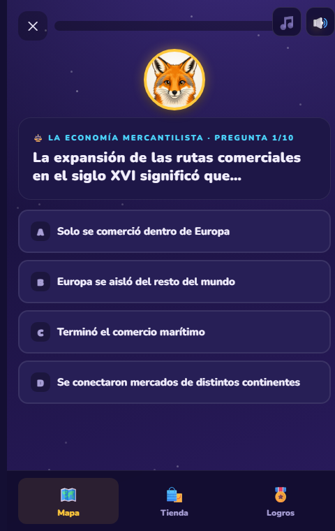

Un juego que enseña el currículum chileno de 8° básico, y que le dice al profesor exactamente qué le está costando a su curso.
Un juego que enseña el currículum chileno de 8° básico, y que le dice al profesor exactamente qué le está costando a su curso.
VULPO no es un juego suelto: es contenido alineado a las Bases Curriculares más un panel que convierte lo que juegan los alumnos en información útil para el profesor.
Historia, Matemática, Ciencias y Lenguaje, con los Objetivos de Aprendizaje del año completo.
Originales, alineadas al currículum de 8° básico, todas aprobadas una a una.
Ranking real por curso, participación semanal y mapa de dominio por objetivo de aprendizaje.

El colegio crea sus cursos, el profesor inscribe a sus alumnos y cada uno recibe un código personal. Los alumnos entran desde su teléfono. No hay que instalar nada.
El mapa de dominio ordena los objetivos de aprendizaje de peor a mejor logro, y dice quiénes necesitan apoyo en cada uno. Es una brújula para decidir qué reforzar en clase: no sirve para calificar, y no está pensado para eso.
Las imágenes de esta sección corresponden a un curso de demostración: los nombres y los porcentajes son simulados.
 DATOS SIMULADOS
DATOS SIMULADOS
Avance por objetivo: lo que está más flojo, primero.
 DATOS SIMULADOS
DATOS SIMULADOS
El panel propone qué reforzar y lo lanza al curso en un clic.
El profesor lanza un desafío sobre el objetivo que está flojo y le llega a todo el curso.
Quién jugó esta semana y quién no ha entrado nunca.
Los compañeros compiten con datos de verdad, por curso y por asignatura.
VULPO nació porque un papá chileno quiso ayudar a su hijo de 8° básico a estudiar con los medios que ellos ya usan: el teléfono.
Y mientras tanto está repasando los objetivos de aprendizaje del año. Sin darse cuenta, está aprendiendo.
Se juega desde el teléfono, en vertical, y cada capítulo toma unos minutos.
🎮 Probar la demo
 DATOS SIMULADOS
DATOS SIMULADOS
El ranking de su propio curso: eso es lo que los hace volver.
Cuéntame de tu curso y vemos cómo implementarlo. Sin compromiso.
💬 Hablemos por WhatsApp